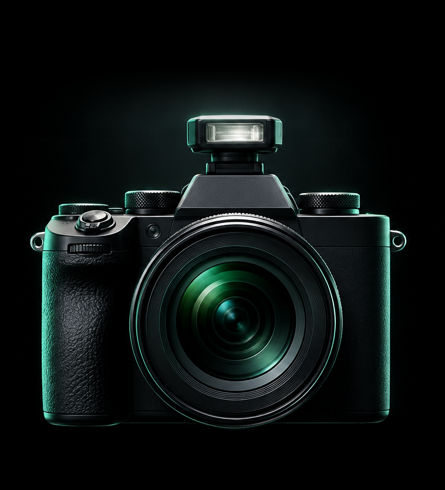
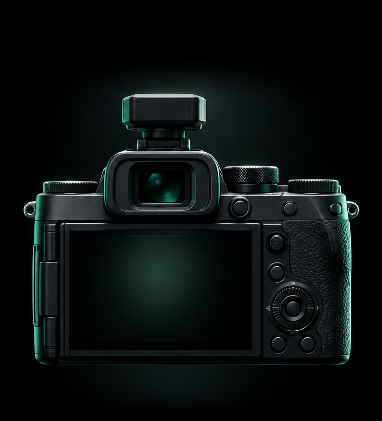

9:41
PAPARAZZI ON DEMAND
Who are you tonight?
Flip the lens,
flip the script.


SEEKER
In front
of the lens
Get seen. Get your pics.
Step into the spotlight
PAPARAZZI
Behind
the lens
Take pics. Get paid.
Capture the moment
Swipe the camera to flip the lens